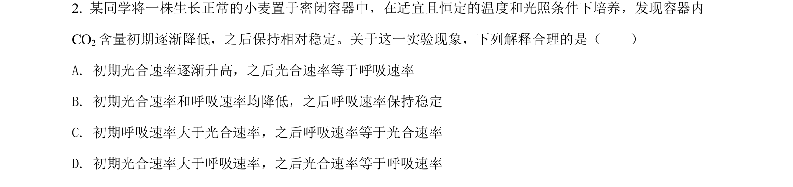
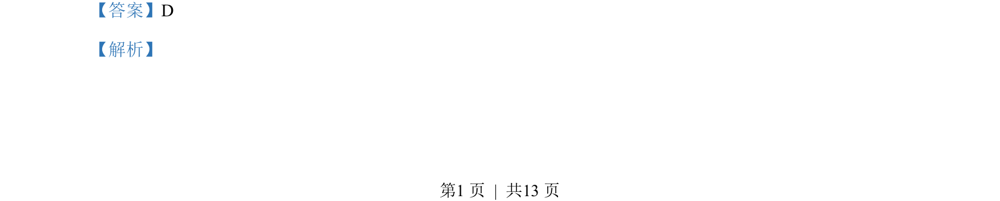
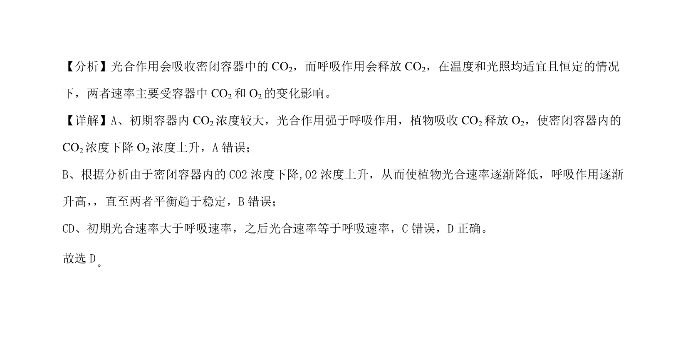

2022-全国乙-02
吉林2022卷全国乙不分题2题型选择难易
考点：光合作用 呼吸作用 气体浓度变化
题面

摘要
光合作用与呼吸作用在密闭容器中的速率动态分析
关联考点
答案与解析


📄 原 PDF 第 1 页：素材/真题/吉林/2008-2024·（吉林）生物高考真题/2022年高考生物试卷（全国乙卷）（解析卷）.pdf
题干文本
- 某同学将一株生长正常的小麦置于密闭容器中，在适宜且恒定的温度和光照条件下培养，发现容器内
CO2含量初期逐渐降低，之后保持相对稳定。关于这一实验现象，下列解释合理的是（ ）
A. 初期光合速率逐渐升高，之后光合速率等于呼吸速率
B. 初期光合速率和呼吸速率均降低，之后呼吸速率保持稳定
C. 初期呼吸速率大于光合速率，之后呼吸速率等于光合速率
D. 初期光合速率大于呼吸速率，之后光合速率等于呼吸速率
解析文本
【答案】D
【解析】